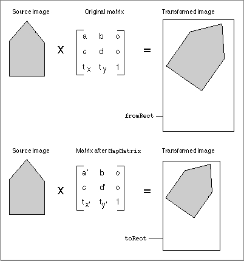

MapMatrix
TheMapMatrixfunction alters an existing matrix so that it defines a transformation from one rectangle to another, similar to theMapRectandMapRegionroutines that are described in Inside Macintosh: Imaging.pascal void MapMatrix (MatrixRecord *matrix, Rect *fromRect, Rect *toRect);
matrix- Contains a pointer to a matrix structure. The
MapMatrixfunction modifies this matrix so that it performs a transformation in the rectangle specified by thetoRectparameter that is analogous to the transformation it currently performs in the rectangle specified by thefromRectparameter.fromRect- Contains a pointer to the source rectangle.
toRect- Contains a pointer to the destination rectangle.
DESCRIPTION
TheMapMatrixfunction affects only the scaling and translation attributes of the matrix. This function is similar toRectMatrix, with the exception thatMapMatrixconcatenates the translation and scaling operations to the previous contents of the matrix, whereasRectMatrixfirst sets the matrix to the identity state.Figure 2-45 shows how the matrix that you obtain from the
MapMatrixfunction transforms a source image.Figure 2-45 Transforming an image with the
MapMatrixfunction
SEE ALSO
You can create a matrix that maps one rectangle to another by calling theRectMatrixfunction, which is described in the previous section.